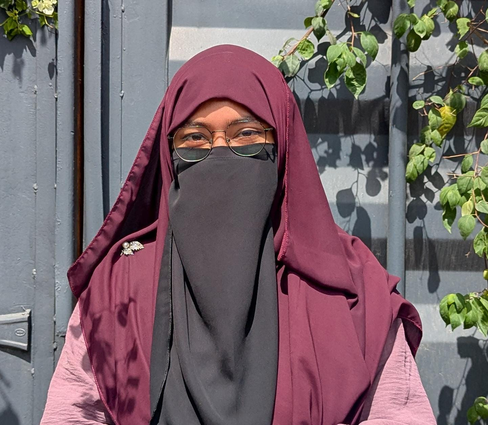

Education graduate. Teacher. Photographer.
Education graduate, teacher, and photographer. Hands-on experience in data enumeration and teaching internships — comfortable with field survey tools, structured interviews, and careful data verification, as well as lesson planning, classroom management, and student support. Behind the camera, drawn to the same eye for detail and quiet observation that fieldwork demands.
|
Bachelor of Education
IER, University of Dhaka
|
2022–2025 | CGPA 3.72 |
|
HSC, Science
|
2020 | GPA 5.00 |
|
SSC, Science
|
2018 | GPA 5.00 |